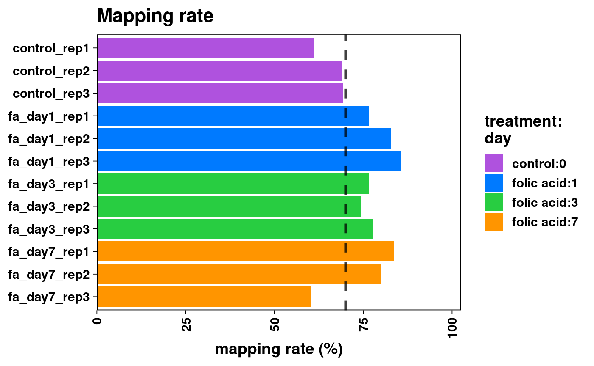
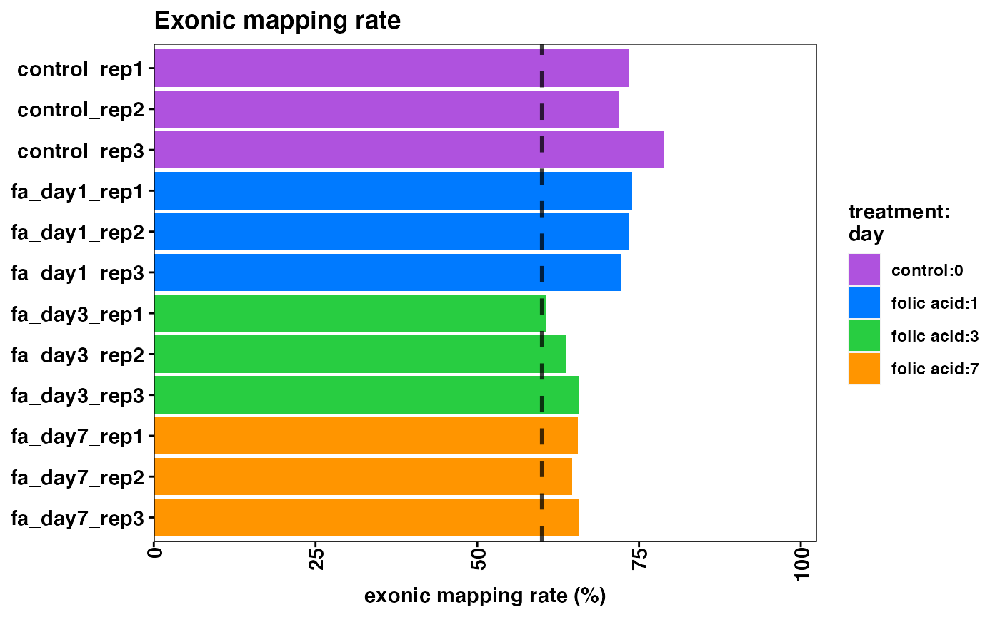
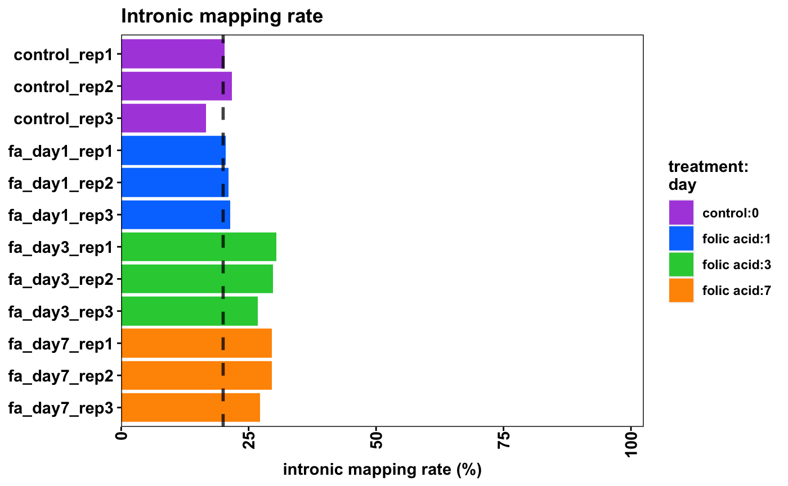
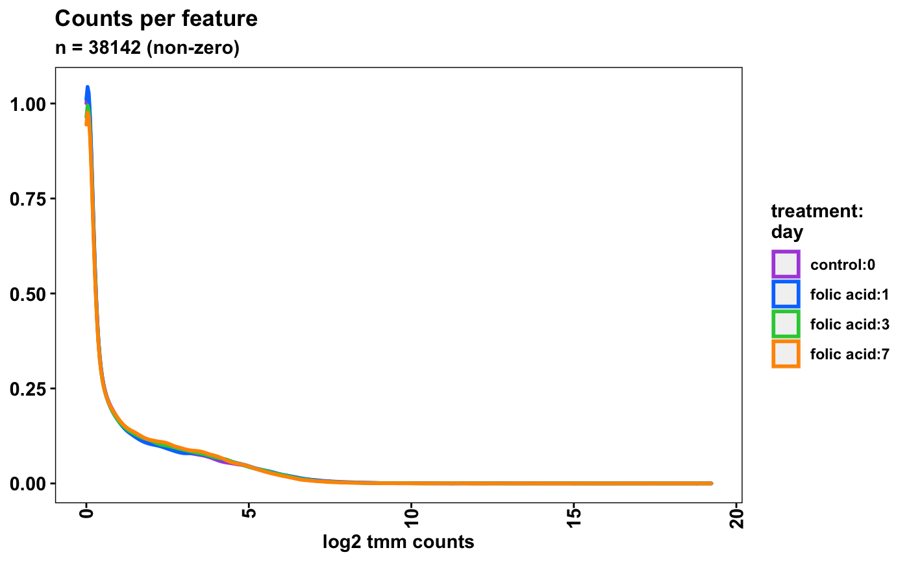
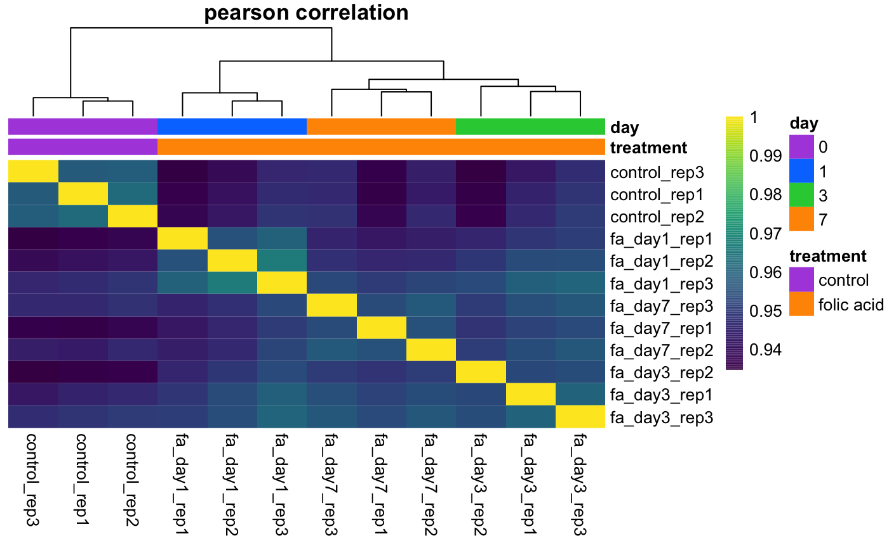
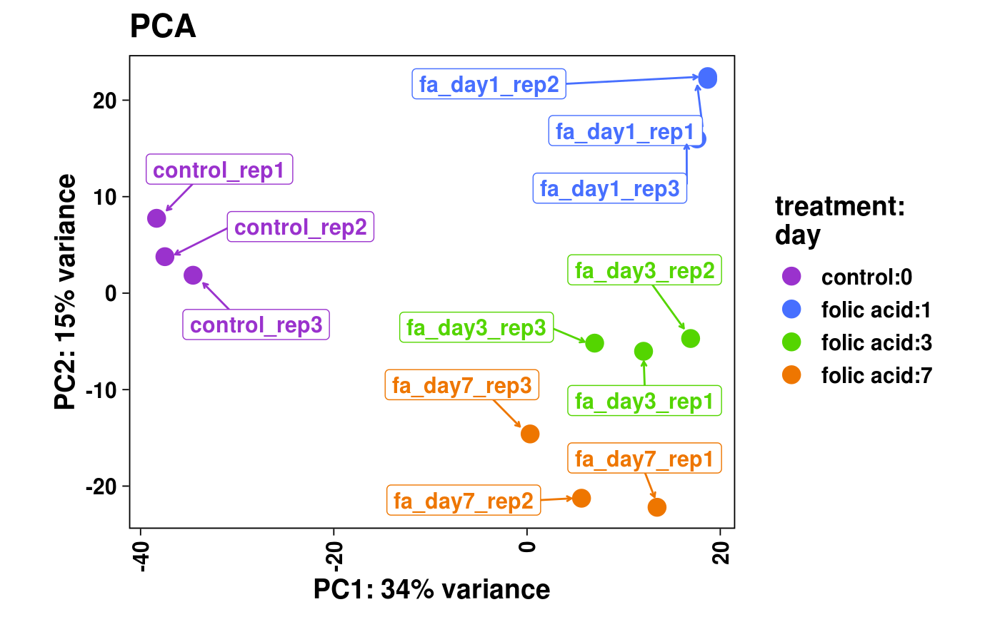

Abstract
RNA-seq analysis involves multiple steps from processing raw sequencing data to identifying, organizing, annotating, and reporting differentially expressed genes. bcbio is an open source, community-maintained framework providing automated and scalable RNA-seq methods for identifying gene abundance counts. We have developed bcbioRNASeq, a Bioconductor package that provides ready-to-render templates and wrapper functions to post-process bcbio output data. bcbioRNASeq automates the generation of high-level RNA-seq reports, including identification of differentially expressed genes, functional enrichment analysis and quality control analysis.
Introduction
For a high-level overview of our bcbio RNA-seq analysis pipeline, including detailed explanation of the bcbioRNASeq S4 class definition, first consult our workflow paper published in F1000 Research (Steinbaugh et al. 2018). This vignette is focused on more advanced usage and edge cases that a user may encounter when attempting to load a bcbio dataset and perform downstream quality control analysis.
Note: if you use bcbioRNASeq in published research, please include this citation:
citation("bcbioRNASeq")##
## To cite bcbioRNASeq in publications use:
##
## Steinbaugh MJ, Pantano L, Kirchner RD, Barrera V, Chapman BA,
## Piper ME, Mistry M, Khetani RS, Rutherford KD, Hoffman O,
## Hutchinson JN, Ho Sui SJ. (2018). bcbioRNASeq: R package for
## bcbio RNA-seq analysis. F1000Research, 6:1976. URL
## https://f1000research.com/articles/6-1976/v2. DOI
## 10.12688/f1000research.12093.2.
##
## A BibTeX entry for LaTeX users is
##
## @Article{,
## title = {{bcbioRNASeq}: {R} package for bcbio {RNA-seq} analysis},
## author = {Michael J. Steinbaugh and Lorena Pantano and Rory D. Kirchner and Victor Barrera and Brad A. Chapman and Mary E. Piper and Meeta Mistry and Radhika S. Khetani and Kayleigh D. Rutherford and Oliver Hofmann and John N. Hutchinson and Shannan J. Ho Sui},
## journal = {F1000Research},
## volume = {6},
## number = {1976},
## year = {2018},
## url = {https://f1000research.com/articles/6-1976/v2},
## doi = {10.12688/f1000research.12093.2},
## }Loading bcbio data
The bcbioRNASeq constructor function is the main interface connecting bcbio] output data to interactive use in R. It is highly customizable and supports a number of options for advanced use cases. Consult the documentation for additional details.
help(topic = "bcbioRNASeq", package = "bcbioRNASeq")Upload directory
We have designed the constructor to work as simply as possible by default. The only required argument is uploadDir, the path to the bcbio final upload directory specified with upload: in the YAML configuration. Refer to the bcbio configuration documentation for detailed information on how to set up a bcbio run, which is outside the scope of this vignette.
For example, let’s load up the example bcbio dataset stored internally in the package.
uploadDir <- system.file("extdata/bcbio", package = "bcbioRNASeq")
stopifnot(file.exists(uploadDir))bcbio outputs RNA-seq data in a standardized directory structure, which is described in detail in our workflow paper.
list.files(path = uploadDir, full.names = FALSE, recursive = TRUE)## [1] "2018-03-18_GSE65267-merged/bcbio-nextgen-commands.log"
## [2] "2018-03-18_GSE65267-merged/bcbio-nextgen.log"
## [3] "2018-03-18_GSE65267-merged/combined.counts"
## [4] "2018-03-18_GSE65267-merged/programs.txt"
## [5] "2018-03-18_GSE65267-merged/project-summary.yaml"
## [6] "2018-03-18_GSE65267-merged/tx2gene.csv"
## [7] "control_rep1/salmon/quant.sf"
## [8] "control_rep2/salmon/quant.sf"
## [9] "control_rep3/salmon/quant.sf"
## [10] "fa_day7_rep1/salmon/quant.sf"
## [11] "fa_day7_rep2/salmon/quant.sf"
## [12] "fa_day7_rep3/salmon/quant.sf"
## [13] "sample_metadata.csv"Counts level
By default, bcbioRNASeq imports counts at gene level, which are required for standard differential expression analysis (level = "genes"). For pseudo-aligned counts (e.g. Salmon, Kallisto, Sailfish) (Bray et al. 2016; Patro, Mount, and Kingsford 2014; Patro et al. 2017), tximport (Soneson, Love, and Robinson 2016) is used internally to aggregate transcript-level counts to gene-level counts, and generates length-scaled transcripts per million (TPM) values. For aligned counts processed with featureCounts (Liao, Smyth, and Shi 2014) (e.g. STAR, HISAT2) (Dobin et al. 2013; Dobin and Gingeras 2016; Kim, Langmead, and Salzberg 2015), these values are already returned at gene level, and therefore not handled by tximport. Once the gene-level counts are imported during the bcbioRNASeq call, the DESeq2 package (Love, Huber, and Anders 2014) is then used to generate an internal DESeqDataSet from which we derive normalized and variance-stabilized counts.
bcb <- bcbioRNASeq(uploadDir = uploadDir, level = "genes")
print(bcb)## bcbioRNASeq 0.3.13
## uploadDir: /data00/home/michael.steinbaugh/R/x86_64-redhat-linux-gnu-library/3.5/bioc-3.8-release/bcbioRNASeq/extdata/bcbio
## dates(2): [bcbio] 2018-03-18; [R] 2019-03-22
## level: genes
## caller: salmon
## organism: Mus musculus
## interestingGroups: sampleName
## class: RangedSummarizedExperiment
## dim: 100 6
## metadata(26): version level ... wd sessionInfo
## assays(5): counts tpm avgTxLength normalized vst
## rownames(100): ENSMUSG00000000001 ENSMUSG00000000003 ...
## ENSMUSG00000062661 ENSMUSG00000074340
## rowData names(0):
## colnames(6): control_rep1 control_rep2 ... fa_day7_rep2
## fa_day7_rep3
## colData names(26): averageInsertSize averageReadLength ... tissue
## treatmentAlternatively, if you want to perform transcript-aware analysis, such as differential exon usage or splicing analysis, transcript-level counts can be obtained using level = "transcripts". Note that when counts are loaded at transcript level, TPMs are generated with tximport internally, but no additional normalizations or transformations normally calculated for gene-level counts with DESeq2 are generated.
bcb <- bcbioRNASeq(uploadDir = uploadDir, level = "transcripts")
print(bcb)## bcbioRNASeq 0.3.13
## uploadDir: /data00/home/michael.steinbaugh/R/x86_64-redhat-linux-gnu-library/3.5/bioc-3.8-release/bcbioRNASeq/extdata/bcbio
## dates(2): [bcbio] 2018-03-18; [R] 2019-03-22
## level: transcripts
## caller: salmon
## organism: Mus musculus
## interestingGroups: sampleName
## class: RangedSummarizedExperiment
## dim: 100 6
## metadata(26): version level ... wd sessionInfo
## assays(3): counts tpm avgTxLength
## rownames(100): ENSMUST00000000001 ENSMUST00000000003 ...
## ENSMUST00000000674 ENSMUST00000000687
## rowData names(0):
## colnames(6): control_rep1 control_rep2 ... fa_day7_rep2
## fa_day7_rep3
## colData names(26): averageInsertSize averageReadLength ... tissue
## treatmentExpression callers
Since bcbio is flexible and supports a number of expression callers, we have provided advanced options in the bcbioRNASeq constructor to support a variety of workflows using the caller argument. Salmon, Kallisto, and Sailfish counts are supported at either gene or transcript level. Internally, these are loaded using tximport.
STAR and HISAT2 aligned counts processed with featureCounts are also supported, but only at gene level.
bcb_star <- bcbioRNASeq(uploadDir = uploadDir, caller = "star")
assayNames(bcb_star)## [1] "counts" "normalized" "vst"Sample selection and metadata
If you’d like to load up only a subset of samples, this can be done easily using the samples argument. Note that the character vector declared here must match the description column specified in the sample metadata. Conversely, if you’re working with a large dataset and you simply want to drop a few samples, this can be accomplished with the censorSamples argument.
When working with a bcbio run that has incorrect or outdated metadata, the simplest way to fix this issue is to pass in new metadata from an external spreadsheet (CSV or Excel) using the sampleMetadataFile argument. Note that this can also be used to subset the bcbio dataset, similar to the samples argument (see above), based on the rows that are included in the spreadsheet.
sampleMetadataFile <- file.path(uploadDir, "sample_metadata.csv")
stopifnot(file.exists(sampleMetadataFile))
import(file = sampleMetadataFile)## fileName description treatment day
## 1 control_rep1_R1.fastq.gz control_rep1 control 0
## 2 control_rep2_R1.fastq.gz control_rep2 control 0
## 3 control_rep3_R1.fastq.gz control_rep3 control 0
## 4 fa_day7_rep1_R1.fastq.gz fa_day7_rep1 folic acid 7
## 5 fa_day7_rep2_R1.fastq.gz fa_day7_rep2 folic acid 7
## 6 fa_day7_rep3_R1.fastq.gz fa_day7_rep3 folic acid 7bcb <- bcbioRNASeq(
uploadDir = uploadDir,
sampleMetadataFile = sampleMetadataFile
)
# FIXME This step causes pkgdown to error.
# https://github.com/r-lib/pkgdown/issues/666
# pkgdown can't locate the `sampleData()` generic correctly.
# sampleData(bcb)Genome annotations
When analyzing a dataset against a well-annotated genome, we recommend importing the corresponding metadata using AnnotationHub and ensembldb. This functionality is natively supported in the bcbioRNASeq constructor with using the organism, ensemblRelease, and genomeBuild arguments. This will return a GRanges object using the GenomicRanges package (Lawrence et al. 2013), which contains coordinates and rich metadata for each gene or transcript. These annotations are accessible with the rowRanges and rowData functions defined in the SummarizedExperiment package (Huber et al. 2015).
For example, with our internal bcbio dataset, we’re analyzing counts generated against the Ensembl Mus musculus GRCm38 genome build (release 87). These parameters can be defined in the object load call to ensure that the annotations match up exactly with the genome used.
bcb <- bcbioRNASeq(
uploadDir = uploadDir,
level = "genes",
organism = "Mus musculus",
genomeBuild = "GRCm38",
ensemblRelease = 87
)
print(rowRanges(bcb))## GRanges object with 100 ranges and 7 metadata columns:
## seqnames ranges strand | broadClass
## <Rle> <IRanges> <Rle> | <Rle>
## ENSMUSG00000000001 3 108107280-108146146 - | coding
## ENSMUSG00000000003 X 77837901-77853623 - | coding
## ENSMUSG00000000028 16 18780447-18811987 - | coding
## ENSMUSG00000000049 11 108343354-108414396 + | coding
## ENSMUSG00000000058 6 17281185-17289115 + | coding
## ... ... ... ... . ...
## ENSMUSG00000048583 7 142650766-142666816 - | coding
## ENSMUSG00000055022 15 92051165-92341967 + | coding
## ENSMUSG00000061689 2 156613705-156764363 + | coding
## ENSMUSG00000062661 2 31245823-31295989 + | coding
## ENSMUSG00000074340 3 105973711-105987423 + | coding
## description
## <Rle>
## ENSMUSG00000000001 guanine nucleotide binding protein (G protein), alpha inhibiting 3 [Source:MGI Symbol;Acc:MGI:95773]
## ENSMUSG00000000003 probasin [Source:MGI Symbol;Acc:MGI:1860484]
## ENSMUSG00000000028 cell division cycle 45 [Source:MGI Symbol;Acc:MGI:1338073]
## ENSMUSG00000000049 apolipoprotein H [Source:MGI Symbol;Acc:MGI:88058]
## ENSMUSG00000000058 caveolin 2 [Source:MGI Symbol;Acc:MGI:107571]
## ... ...
## ENSMUSG00000048583 insulin-like growth factor 2 [Source:MGI Symbol;Acc:MGI:96434]
## ENSMUSG00000055022 contactin 1 [Source:MGI Symbol;Acc:MGI:105980]
## ENSMUSG00000061689 discs, large homolog-associated protein 4 (Drosophila) [Source:MGI Symbol;Acc:MGI:2138865]
## ENSMUSG00000062661 neuronal calcium sensor 1 [Source:MGI Symbol;Acc:MGI:109166]
## ENSMUSG00000074340 oviductal glycoprotein 1 [Source:MGI Symbol;Acc:MGI:106661]
## entrezID geneBiotype geneID geneName
## <list> <Rle> <Rle> <Rle>
## ENSMUSG00000000001 14679 protein_coding ENSMUSG00000000001 Gnai3
## ENSMUSG00000000003 54192 protein_coding ENSMUSG00000000003 Pbsn
## ENSMUSG00000000028 12544 protein_coding ENSMUSG00000000028 Cdc45
## ENSMUSG00000000049 11818 protein_coding ENSMUSG00000000049 Apoh
## ENSMUSG00000000058 12390 protein_coding ENSMUSG00000000058 Cav2
## ... ... ... ... ...
## ENSMUSG00000048583 16002 protein_coding ENSMUSG00000048583 Igf2
## ENSMUSG00000055022 12805 protein_coding ENSMUSG00000055022 Cntn1
## ENSMUSG00000061689 228836 protein_coding ENSMUSG00000061689 Dlgap4
## ENSMUSG00000062661 14299 protein_coding ENSMUSG00000062661 Ncs1
## ENSMUSG00000074340 12659 protein_coding ENSMUSG00000074340 Ovgp1
## seqCoordSystem
## <Rle>
## ENSMUSG00000000001 chromosome
## ENSMUSG00000000003 chromosome
## ENSMUSG00000000028 chromosome
## ENSMUSG00000000049 chromosome
## ENSMUSG00000000058 chromosome
## ... ...
## ENSMUSG00000048583 chromosome
## ENSMUSG00000055022 chromosome
## ENSMUSG00000061689 chromosome
## ENSMUSG00000062661 chromosome
## ENSMUSG00000074340 chromosome
## -------
## seqinfo: 86 sequences from GRCm38 genomeAlternatively, transcript-level annotations can also be obtained automatically using this method.
bcb <- bcbioRNASeq(
uploadDir = uploadDir,
level = "transcripts",
organism = "Mus musculus",
genomeBuild = "GRCm38",
ensemblRelease = 87
)
print(rowRanges(bcb))## GRanges object with 100 ranges and 13 metadata columns:
## seqnames ranges strand | broadClass
## <Rle> <IRanges> <Rle> | <Rle>
## ENSMUST00000000001 3 108107280-108146146 - | coding
## ENSMUST00000000003 X 77837901-77853623 - | coding
## ENSMUST00000000010 11 96271457-96276595 + | coding
## ENSMUST00000000028 16 18780447-18811972 - | coding
## ENSMUST00000000033 7 142650766-142657496 - | coding
## ... ... ... ... . ...
## ENSMUST00000000642 6 82725025-82774454 - | coding
## ENSMUST00000000645 11 77777265-77865980 + | coding
## ENSMUST00000000646 11 77931012-77979040 + | coding
## ENSMUST00000000674 6 17743592-17942966 + | coding
## ENSMUST00000000687 17 83831356-83846790 - | coding
## description
## <Rle>
## ENSMUST00000000001 guanine nucleotide binding protein (G protein), alpha inhibiting 3 [Source:MGI Symbol;Acc:MGI:95773]
## ENSMUST00000000003 probasin [Source:MGI Symbol;Acc:MGI:1860484]
## ENSMUST00000000010 homeobox B9 [Source:MGI Symbol;Acc:MGI:96190]
## ENSMUST00000000028 cell division cycle 45 [Source:MGI Symbol;Acc:MGI:1338073]
## ENSMUST00000000033 insulin-like growth factor 2 [Source:MGI Symbol;Acc:MGI:96434]
## ... ...
## ENSMUST00000000642 hexokinase 2 [Source:MGI Symbol;Acc:MGI:1315197]
## ENSMUST00000000645 myosin XVIIIA [Source:MGI Symbol;Acc:MGI:2667185]
## ENSMUST00000000646 seizure related gene 6 [Source:MGI Symbol;Acc:MGI:104745]
## ENSMUST00000000674 suppression of tumorigenicity 7 [Source:MGI Symbol;Acc:MGI:1927450]
## ENSMUST00000000687 3-hydroxyanthranilate 3,4-dioxygenase [Source:MGI Symbol;Acc:MGI:1349444]
## entrezID geneBiotype geneID geneName
## <list> <Rle> <Rle> <Rle>
## ENSMUST00000000001 14679 protein_coding ENSMUSG00000000001 Gnai3
## ENSMUST00000000003 54192 protein_coding ENSMUSG00000000003 Pbsn
## ENSMUST00000000010 15417 protein_coding ENSMUSG00000020875 Hoxb9
## ENSMUST00000000028 12544 protein_coding ENSMUSG00000000028 Cdc45
## ENSMUST00000000033 16002 protein_coding ENSMUSG00000048583 Igf2
## ... ... ... ... ...
## ENSMUST00000000642 15277 protein_coding ENSMUSG00000000628 Hk2
## ENSMUST00000000645 360013 protein_coding ENSMUSG00000000631 Myo18a
## ENSMUST00000000646 20370 protein_coding ENSMUSG00000000632 Sez6
## ENSMUST00000000674 64213 protein_coding ENSMUSG00000029534 St7
## ENSMUST00000000687 107766 protein_coding ENSMUSG00000000673 Haao
## seqCoordSystem transcriptBiotype transcriptCdsSeqEnd
## <Rle> <Rle> <Rle>
## ENSMUST00000000001 chromosome protein_coding 108146005
## ENSMUST00000000003 chromosome protein_coding 77853483
## ENSMUST00000000010 chromosome protein_coding 96274859
## ENSMUST00000000028 chromosome protein_coding 18811565
## ENSMUST00000000033 chromosome protein_coding 142655810
## ... ... ... ...
## ENSMUST00000000642 chromosome protein_coding 82773980
## ENSMUST00000000645 chromosome protein_coding 77864835
## ENSMUST00000000646 chromosome protein_coding 77978058
## ENSMUST00000000674 chromosome protein_coding 17942765
## ENSMUST00000000687 chromosome protein_coding 83846716
## transcriptCdsSeqStart transcriptID
## <Rle> <Rle>
## ENSMUST00000000001 108109422 ENSMUST00000000001
## ENSMUST00000000003 77841883 ENSMUST00000000003
## ENSMUST00000000010 96271542 ENSMUST00000000010
## ENSMUST00000000028 18781898 ENSMUST00000000028
## ENSMUST00000000033 142653816 ENSMUST00000000033
## ... ... ...
## ENSMUST00000000642 82727310 ENSMUST00000000642
## ENSMUST00000000645 77777316 ENSMUST00000000645
## ENSMUST00000000646 77931060 ENSMUST00000000646
## ENSMUST00000000674 17743682 ENSMUST00000000674
## ENSMUST00000000687 83831643 ENSMUST00000000687
## transcriptName transcriptSupportLevel
## <Rle> <Rle>
## ENSMUST00000000001 ENSMUST00000000001 1
## ENSMUST00000000003 ENSMUST00000000003 1
## ENSMUST00000000010 ENSMUST00000000010 1
## ENSMUST00000000028 ENSMUST00000000028 1
## ENSMUST00000000033 ENSMUST00000000033 1
## ... ... ...
## ENSMUST00000000642 ENSMUST00000000642 1
## ENSMUST00000000645 ENSMUST00000000645 5
## ENSMUST00000000646 ENSMUST00000000646 1
## ENSMUST00000000674 ENSMUST00000000674 1
## ENSMUST00000000687 ENSMUST00000000687 1
## -------
## seqinfo: 86 sequences from GRCm38 genomeWhen working with a dataset generated against a poorly-annotated or non-standard genome, we provide a fallback method for loading gene annotations from a general feature format (GFF) file with the gffFile argument. If possible, we recommend providing a general transfer format (GTF) file, which is identical to GFF version 2. GFFv3 is more complicated and non-standard, but Ensembl GFFv3 files are also supported.
If your dataset contains transgenes (e.g. EGFP, TDTOMATO) or spike-ins (e.g. ERCCs), these features can be defined with the transgeneNames and spikeNames arguments, which will automatically populate the rowRanges slot with placeholder metadata.
We recommend loading up data per genome in its own bcbioRNASeq object when possible, so that rich metadata can be imported easily. In the edge case where you need to look at multiple genomes simultaneously, set organism = NULL, and bcbioRNASeq will skip the gene annotation acquisition step.
bcb <- bcbioRNASeq(uploadDir = uploadDir, organism = NULL)
print(bcb)## bcbioRNASeq 0.3.13
## uploadDir: /data00/home/michael.steinbaugh/R/x86_64-redhat-linux-gnu-library/3.5/bioc-3.8-release/bcbioRNASeq/extdata/bcbio
## dates(2): [bcbio] 2018-03-18; [R] 2019-03-22
## level: genes
## caller: salmon
## organism: Mus musculus
## interestingGroups: sampleName
## class: RangedSummarizedExperiment
## dim: 100 6
## metadata(26): version level ... wd sessionInfo
## assays(5): counts tpm avgTxLength normalized vst
## rownames(100): ENSMUSG00000000001 ENSMUSG00000000003 ...
## ENSMUSG00000062661 ENSMUSG00000074340
## rowData names(0):
## colnames(6): control_rep1 control_rep2 ... fa_day7_rep2
## fa_day7_rep3
## colData names(26): averageInsertSize averageReadLength ... tissue
## treatmentVariance stabilization
During the bcbioRNASeq constructor call, variance stabilizaton of gene-level counts can be calculated automatically, and is recommended. This is performed internally by the DESeq2 package. These transformations will be slotted into assays as vst and/or rlog matrices. The vst matrix is calculated by DESeq2::varianceStabilizingTransformation and rlog by DESeq2::rlog. For large datasets, rlog calculation can take a long time, so we are currently recommending calculation of only vst by default.
bcb <- bcbioRNASeq(uploadDir = uploadDir, vst = TRUE, rlog = TRUE)
assayNames(bcb)## [1] "counts" "tpm" "avgTxLength" "normalized" "vst"
## [6] "rlog"summary(counts(bcb, normalized = "vst"))## control_rep1 control_rep2 control_rep3 fa_day7_rep1
## Min. : 4.919 Min. : 4.919 Min. : 4.919 Min. : 4.919
## 1st Qu.: 4.919 1st Qu.: 4.919 1st Qu.: 4.919 1st Qu.: 4.919
## Median : 6.051 Median : 5.658 Median : 6.009 Median : 6.237
## Mean : 6.713 Mean : 6.706 Mean : 6.715 Mean : 6.762
## 3rd Qu.: 7.990 3rd Qu.: 8.239 3rd Qu.: 7.815 3rd Qu.: 8.239
## Max. :12.215 Max. :12.972 Max. :11.818 Max. :11.764
## fa_day7_rep2 fa_day7_rep3
## Min. : 4.919 Min. : 4.919
## 1st Qu.: 5.101 1st Qu.: 4.919
## Median : 6.216 Median : 6.185
## Mean : 6.754 Mean : 6.789
## 3rd Qu.: 8.033 3rd Qu.: 7.930
## Max. :12.086 Max. :11.997summary(counts(bcb, normalized = "rlog"))## control_rep1 control_rep2 control_rep3 fa_day7_rep1
## Min. :-1.970 Min. :-1.980 Min. :-1.970 Min. :-1.976
## 1st Qu.: 1.519 1st Qu.: 1.433 1st Qu.: 1.384 1st Qu.: 1.475
## Median : 3.934 Median : 3.720 Median : 3.954 Median : 4.478
## Mean : 4.425 Mean : 4.408 Mean : 4.411 Mean : 4.476
## 3rd Qu.: 7.390 3rd Qu.: 7.856 3rd Qu.: 7.322 3rd Qu.: 7.838
## Max. :12.175 Max. :12.772 Max. :11.777 Max. :11.826
## fa_day7_rep2 fa_day7_rep3
## Min. :-1.976 Min. :-1.975
## 1st Qu.: 1.504 1st Qu.: 1.459
## Median : 3.894 Median : 4.090
## Mean : 4.454 Mean : 4.485
## 3rd Qu.: 7.599 3rd Qu.: 7.637
## Max. :12.075 Max. :12.006Use case dataset
To demonstrate the functionality and configuration of the package, we have taken an experiment from the Gene Expression Omnibus (GEO) public repository of expression data to use as an example use case. The RNA-seq data is from a study of acute kidney injury in a mouse model (GSE65267) (Craciun et al. 2016). The study aims to identify differentially expressed genes in progressive kidney fibrosis and contains samples from mouse kidneys at several time points (n = 3, per time point) after folic acid treatment. From this dataset, we are using a subset of the samples for our use case: before folic acid treatment, and 1, 3, 7 days after treatment.
For the vignette, we are loading a pre-computed version of the example bcbioRNASeq object used in our workflow paper.
loadRemoteData(pasteURL(
"github.com", "hbc", "bcbioRNASeq",
"raw", "f1000v2", "data", "bcb.rda",
protocol = "https"
))
bcb <- updateObject(bcb)
print(bcb)## bcbioRNASeq 0.3.13
## uploadDir: /n/data1/cores/bcbio/bcbioRNASeq/F1000v2/GSE65267-merged/final
## dates(2): [bcbio] 2018-03-18; [R] 2019-03-22
## level: genes
## caller: salmon
## organism: Mus musculus
## interestingGroups: day
## class: RangedSummarizedExperiment
## dim: 51652 12
## metadata(29): version level ... sessionInfo previousVersion
## assays(6): counts tpm ... vst avgTxLength
## rownames(51652): ENSMUSG00000000001 ENSMUSG00000000003 ...
## ENSMUSG00000114967 ENSMUSG00000114968
## rowData names(7): geneID geneName ... entrezID broadClass
## colnames(12): control_rep1 control_rep2 ... fa_day7_rep2
## fa_day7_rep3
## colData names(25): sampleName day ... x5x3Bias xGCSample metadata
For reference, let’s take a look at the sample metadata. By comparison, using colData will return all sample-level metadata, including our quality control metrics generated by bcbio. We recommend instead using sampleData with the clean = TRUE argument in reports, which only returns factor columns of interest.
# FIXME This currently breaks pkgdown (see above).
# sampleData(bcb, clean = TRUE)Interesting groups
Groups of interest to be used for coloring and sample grouping in the quality control plots can be defined in the bcbioRNASeq object using the interestingGroups argument in the bcbioRNASeq constructor call. Assignment method support with the interestingGroups function is also provided, which can modify the groups of interest after the object has been created.
The interestingGroups definition defaults to sampleName, which is automatically generated from the bcbio description metadata for demultiplexed bulk RNA-seq samples. In this case, the samples will be grouped and colored uniquely.
Interesting groups must be defined using a character vector and refer to column names defined in the colData slot of the object. Note that the bcbioRNASeq package uses lower camel case formatting for column names (e.g. “sampleName”), so the interesting groups should be defined using camel case, not snake (e.g. “sample_name”) or dotted case (e.g. “sample.name”).
This approach was inspired by the DESeq2 package, which uses the argument intgroup in some functions, such as plotPCA for labeling groups of interest. We took this idea and ran with it for a number of our quality control functions, which are described in detail below.
interestingGroups(bcb) <- c("treatment", "day")Quality control
Our workflow paper describes the quality control process in detail. In addition, our Quality Control R Markdown template contains notes detailing each metric. Here were are going into more technical detail regarding how to customize the appearance of the plots. Note that all quality control plotting functions inherit the interestingGroups defined inside the bcbioRNASeq object. You can also change this dynamially for each function call using the interestingGroups argument.
Mapping rates
Note that the overall mapping rate is relatively low per sample, while the exonic mapping rate is acceptable. High quality samples should have low intronic mapping rate, and high values are indicative of sample degradation and/or contamination.
plotMappingRate(bcb)
plotExonicMappingRate(bcb)
plotIntronicMappingRate(bcb)
rRNA mapping rate
Note that the samples here have a high rRNA mapping rate. This can be indicative of the polyA enrichment or ribo depletion protocol not having removed all ribosomal RNA (rRNA) transcripts. This will reduce the number of biologically meaningful reads in the experiment and is best avoided.
plotRRNAMappingRate(bcb)
5’->3’ bias
RNA-seq data can have specific biases at either the 5’ or 3’ end of sequenced fragments. It is common to see a small amount of bias, especially if polyA enrichment was performed, or if there is any sample degradation. If a large amount of bias is observed here, be sure to analyze the samples with a Bioanalyzer and check the RIN scores.
plot5Prime3PrimeBias(bcb)
Gene distributions
plotGenesDetected(bcb)
plotGeneSaturation(bcb, label = FALSE)
plotGeneSaturation(bcb, label = TRUE)
plotCountsPerGene(bcb, geom = "boxplot")
plotCountsPerGene(bcb, geom = "density")
Variance stabilization
These plots show the standard deviation of normalized counts using log2, varianceStabilizingTransform, rlog, and tmm by rank(mean). Note that all counts shown are log2 scale.
plotMeanSD(bcb)
Sample similarity
We can visualize sample similarity with principal component analysis (PCA) and hierarchical clustering of sample correlations. These functions support multiple normalization methods with the normalized argument.
plotPCA(bcb, label = FALSE)
plotPCA(bcb, label = TRUE)
plotCorrelationHeatmap(bcb, method = "pearson")
plotCorrelationHeatmap(bcb, method = "spearman")
Saving counts
The counts accessor function returns raw counts by default. Multiple normalization methods are accessible with the normalized argument:
-
FALSE: Raw counts. When importing using a tximport-compatible caller (e.g. salmon, kallisto), these are length scaled by default (seecountsFromAbundance). When importing using a featureCounts-compatible caller (e.g. HISAT2, STAR), these are integer counts. -
TRUE: DESeq2 size factor adjusted counts. -
"tpm": Transcripts per million, calculated by tximport. -
"tmm": Trimmed mean of M-values normalization method. -
"vst": Variance stabilization transformation. -
"rlog": Regularized log transformation. -
"rle": Relative log expression transformation.
We are providing bcbioRNASeq method support for the export function, which can automatically write these counts and corresponding metadata (e.g. rowData, colData) to disk in a single call.
x <- export(bcb, dir = "export")
print(x)## $assays
## $assays$counts
## [1] "/data00/home/michael.steinbaugh/git/packages/bcbioRNASeq/vignettes/export/bcb/assays/counts.csv"
##
## $assays$tpm
## [1] "/data00/home/michael.steinbaugh/git/packages/bcbioRNASeq/vignettes/export/bcb/assays/tpm.csv"
##
## $assays$normalized
## [1] "/data00/home/michael.steinbaugh/git/packages/bcbioRNASeq/vignettes/export/bcb/assays/normalized.csv"
##
## $assays$rlog
## [1] "/data00/home/michael.steinbaugh/git/packages/bcbioRNASeq/vignettes/export/bcb/assays/rlog.csv"
##
## $assays$vst
## [1] "/data00/home/michael.steinbaugh/git/packages/bcbioRNASeq/vignettes/export/bcb/assays/vst.csv"
##
## $assays$avgTxLength
## [1] "/data00/home/michael.steinbaugh/git/packages/bcbioRNASeq/vignettes/export/bcb/assays/avgTxLength.csv"
##
##
## $colData
## [1] "/data00/home/michael.steinbaugh/git/packages/bcbioRNASeq/vignettes/export/bcb/colData.csv"
##
## $rowData
## [1] "/data00/home/michael.steinbaugh/git/packages/bcbioRNASeq/vignettes/export/bcb/rowData.csv"Differential expression
bcbioRNASeq integrates with DESeq2, which we recommend for differential expression. To prepare our dataset for analysis, we need to coerce the bcbioRNASeq object to a DESeqDataSet. Use the as function or refer to the DESeq2 documentation for the DESeqDataSet constructor.
dds <- as(bcb, "DESeqDataSet")
print(dds)## class: DESeqDataSet
## dim: 51652 12
## metadata(11): version caller ... date sessionInfo
## assays(1): counts
## rownames(51652): ENSMUSG00000000001 ENSMUSG00000000003 ...
## ENSMUSG00000114967 ENSMUSG00000114968
## rowData names(7): geneID geneName ... entrezID broadClass
## colnames(12): control_rep1 control_rep2 ... fa_day7_rep2
## fa_day7_rep3
## colData names(25): sampleName day ... x5x3Bias xGCSince both bcbioRNASeq and DESeqDataSet classes extend RangedSummarizedExperiment, internally we coerce the original bcbioRNASeq object to a RangedSummarizedExperiment and then use the DESeqDataSet constructor, which requires a SummarizedExperiment with integer counts.
The source code for our bcbioRNASeq to DESeqDataSet coercion is accessible with getMethod.
getMethod(
f = "coerce",
signature = signature(from = "bcbioRNASeq", to = "DESeqDataSet")
)Now you can perform differential expression analysis with DESeq2. The authors of that package have provided a number of detailed, well documented references online:
- Analyzing RNA-seq data with DESeq2.
- RNA-Seq workflow: gene-level exploratory analysis and differential expression.
- Differential analyses for RNA-seq: transcript-level estimates improve gene-level inferences.
We also provide a parameterized starter R Markdown template for standard DESeq2] differential expression, supporting analysis and visualization of multiple contrasts inside a single report. In our workflow paper, we also describe an example LRT analysis.
Functional analysis
We provide a starter R Markdown template for gene set enrichment analysis (GSEA) and Kyoto Encyclopedia of Genes and Genomes (KEGG) pathway enrichment analysis (Kanehisa and Goto 2000; Subramanian et al. 2005), which leverages the functionality of the clusterProfiler package (Yu et al. 2012). This workflow is described in detail in our workflow paper, and is outside the scope of this advanced use vignette. For more information on functional analysis, consult the clusterProfiler vignette or Stephen Turner’s excellent DESeq2 to fgsea workflow.
R session information
utils::sessionInfo()## R version 3.5.2 (2018-12-20)
## Platform: x86_64-redhat-linux-gnu (64-bit)
## Running under: Red Hat Enterprise Linux
##
## Matrix products: default
## BLAS/LAPACK: /usr/lib64/R/lib/libRblas.so
##
## locale:
## [1] LC_CTYPE=en_US.UTF-8 LC_NUMERIC=C
## [3] LC_TIME=en_US.UTF-8 LC_COLLATE=en_US.UTF-8
## [5] LC_MONETARY=en_US.UTF-8 LC_MESSAGES=en_US.UTF-8
## [7] LC_PAPER=en_US.UTF-8 LC_NAME=C
## [9] LC_ADDRESS=C LC_TELEPHONE=C
## [11] LC_MEASUREMENT=en_US.UTF-8 LC_IDENTIFICATION=C
##
## attached base packages:
## [1] parallel stats4 datasets utils grDevices graphics stats
## [8] methods base
##
## other attached packages:
## [1] hexbin_1.27.2 bcbioRNASeq_0.3.13
## [3] basejump_0.9.15 SummarizedExperiment_1.12.0
## [5] DelayedArray_0.8.0 BiocParallel_1.16.6
## [7] matrixStats_0.54.0 Biobase_2.42.0
## [9] GenomicRanges_1.34.0 GenomeInfoDb_1.18.2
## [11] IRanges_2.16.0 S4Vectors_0.20.1
## [13] BiocGenerics_0.28.0 BiocStyle_2.10.0
##
## loaded via a namespace (and not attached):
## [1] R.utils_2.8.0 tidyselect_0.2.5
## [3] RSQLite_2.1.1 AnnotationDbi_1.44.0
## [5] htmlwidgets_1.3 grid_3.5.2
## [7] munsell_0.5.0 preprocessCore_1.44.0
## [9] withr_2.1.2 colorspace_1.4-1
## [11] knitr_1.22 rstudioapi_0.10
## [13] SingleCellExperiment_1.4.1 rdrop2_0.8.1
## [15] labeling_0.3 lasso2_1.2-20
## [17] tximport_1.10.1 GenomeInfoDbData_1.2.0
## [19] mnormt_1.5-5 bit64_0.9-7
## [21] pheatmap_1.0.12 rprojroot_1.3-2
## [23] Matrix.utils_0.9.7 generics_0.0.2
## [25] xfun_0.5 R6_2.4.0
## [27] locfit_1.5-9.1 AnnotationFilter_1.6.0
## [29] bitops_1.0-6 reshape_0.8.8
## [31] assertthat_0.2.1 promises_1.0.1
## [33] scales_1.0.0 nnet_7.3-12
## [35] gtable_0.2.0 affy_1.60.0
## [37] ensembldb_2.6.7 rlang_0.3.2
## [39] genefilter_1.64.0 GlobalOptions_0.1.0
## [41] splines_3.5.2 rtracklayer_1.42.2
## [43] lazyeval_0.2.2 acepack_1.4.1
## [45] broom_0.5.1 checkmate_1.9.1
## [47] BiocManager_1.30.4 yaml_2.2.0
## [49] reshape2_1.4.3 GenomicFeatures_1.34.6
## [51] backports_1.1.3 httpuv_1.5.0
## [53] syntactic_0.1.6 Hmisc_4.2-0
## [55] tools_3.5.2 bookdown_0.9
## [57] psych_1.8.12 logging_0.9-107
## [59] ggplot2_3.1.0 affyio_1.52.0
## [61] RColorBrewer_1.1-2 goalie_0.2.12
## [63] ggdendro_0.1-20 sessioninfo_1.1.1
## [65] Rcpp_1.0.1 plyr_1.8.4
## [67] base64enc_0.1-3 progress_1.2.0
## [69] zlibbioc_1.28.0 purrr_0.3.2
## [71] RCurl_1.95-4.12 prettyunits_1.0.2
## [73] rpart_4.1-13 viridis_0.5.1
## [75] GetoptLong_0.1.7 cowplot_0.9.4
## [77] haven_2.1.0 grr_0.9.5
## [79] ggrepel_0.8.0 cluster_2.0.7-1
## [81] fs_1.2.7 magrittr_1.5
## [83] data.table_1.12.0 openxlsx_4.1.0
## [85] circlize_0.4.5 ProtGenerics_1.14.0
## [87] hms_0.4.2 mime_0.6
## [89] evaluate_0.13 bioverbs_0.1.9
## [91] xtable_1.8-3 XML_3.98-1.19
## [93] rio_0.5.16 readxl_1.3.1
## [95] gridExtra_2.3 shape_1.4.4
## [97] compiler_3.5.2 biomaRt_2.38.0
## [99] tibble_2.1.1 crayon_1.3.4
## [101] transformer_0.1.7 R.oo_1.22.0
## [103] htmltools_0.3.6 later_0.8.0
## [105] Formula_1.2-3 tidyr_0.8.3
## [107] geneplotter_1.60.0 DBI_1.0.0
## [109] ComplexHeatmap_1.20.0 MASS_7.3-51.1
## [111] Matrix_1.2-15 readr_1.3.1
## [113] brio_0.1.14 cli_1.1.0
## [115] vsn_3.50.0 R.methodsS3_1.7.1
## [117] forcats_0.4.0 pkgconfig_2.0.2
## [119] pkgdown_1.3.0 GenomicAlignments_1.18.1
## [121] foreign_0.8-71 xml2_1.2.0
## [123] roxygen2_6.1.1 annotate_1.60.1
## [125] XVector_0.22.0 stringr_1.4.0
## [127] digest_0.6.18 ConsensusClusterPlus_1.46.0
## [129] Biostrings_2.50.2 cellranger_1.1.0
## [131] rmarkdown_1.12 htmlTable_1.13.1
## [133] edgeR_3.24.3 curl_3.3
## [135] shiny_1.2.0 Rsamtools_1.34.1
## [137] commonmark_1.7 rjson_0.2.20
## [139] nlme_3.1-137 jsonlite_1.6
## [141] DEGreport_1.18.1 viridisLite_0.3.0
## [143] desc_1.2.0 limma_3.38.3
## [145] pillar_1.3.1 lattice_0.20-38
## [147] Nozzle.R1_1.1-1 httr_1.4.0
## [149] survival_2.43-3 interactiveDisplayBase_1.20.0
## [151] glue_1.3.1 zip_2.0.1
## [153] bit_1.1-14 stringi_1.4.3
## [155] bcbioBase_0.5.14 blob_1.1.1
## [157] DESeq2_1.22.2 AnnotationHub_2.14.5
## [159] latticeExtra_0.6-28 memoise_1.1.0
## [161] dplyr_0.8.0.1References
The papers and software cited in our workflows are available as a shared library on Paperpile.
Bray, Nicolas L, Harold Pimentel, Páll Melsted, and Lior Pachter. 2016. “Near-Optimal Probabilistic RNA-seq Quantification.” Nat. Biotechnol. 34 (5) (May): 525–527. doi:10.1038/nbt.3519. http://dx.doi.org/10.1038/nbt.3519.
Craciun, Florin L, Vanesa Bijol, Amrendra K Ajay, Poornima Rao, Ramya K Kumar, John Hutchinson, Oliver Hofmann, et al. 2016. “RNA Sequencing Identifies Novel Translational Biomarkers of Kidney Fibrosis.” J. Am. Soc. Nephrol. 27 (6) (June): 1702–1713. doi:10.1681/ASN.2015020225. http://dx.doi.org/10.1681/ASN.2015020225.
Dobin, Alexander, and Thomas R Gingeras. 2016. “Optimizing RNA-Seq Mapping with STAR.” Methods Mol. Biol. 1415: 245–262. doi:10.1007/978-1-4939-3572-7\_13. http://dx.doi.org/10.1007/978-1-4939-3572-7_13.
Dobin, Alexander, Carrie A Davis, Felix Schlesinger, Jorg Drenkow, Chris Zaleski, Sonali Jha, Philippe Batut, Mark Chaisson, and Thomas R Gingeras. 2013. “STAR: ultrafast Universal RNA-seq Aligner.” Bioinformatics 29 (1) (January): 15–21. doi:10.1093/bioinformatics/bts635. http://dx.doi.org/10.1093/bioinformatics/bts635.
Huber, Wolfgang, Vincent J Carey, Robert Gentleman, Simon Anders, Marc Carlson, Benilton S Carvalho, Hector Corrada Bravo, et al. 2015. “Orchestrating High-Throughput Genomic Analysis with Bioconductor.” Nat. Methods 12 (2) (February): 115–121. doi:10.1038/nmeth.3252. http://dx.doi.org/10.1038/nmeth.3252.
Kanehisa, M, and S Goto. 2000. “KEGG: kyoto Encyclopedia of Genes and Genomes.” Nucleic Acids Res. 28 (1) (January): 27–30. https://www.ncbi.nlm.nih.gov/pubmed/10592173.
Kim, Daehwan, Ben Langmead, and Steven L Salzberg. 2015. “HISAT: a Fast Spliced Aligner with Low Memory Requirements.” Nat. Methods 12 (4) (April): 357–360. doi:10.1038/nmeth.3317. http://dx.doi.org/10.1038/nmeth.3317.
Lawrence, Michael, Wolfgang Huber, Hervé Pagès, Patrick Aboyoun, Marc Carlson, Robert Gentleman, Martin T Morgan, and Vincent J Carey. 2013. “Software for Computing and Annotating Genomic Ranges.” PLoS Comput. Biol. 9 (8) (August): e1003118. doi:10.1371/journal.pcbi.1003118. http://dx.doi.org/10.1371/journal.pcbi.1003118.
Liao, Yang, Gordon K Smyth, and Wei Shi. 2014. “featureCounts: an Efficient General Purpose Program for Assigning Sequence Reads to Genomic Features.” Bioinformatics 30 (7) (April): 923–930. doi:10.1093/bioinformatics/btt656. http://dx.doi.org/10.1093/bioinformatics/btt656.
Love, Michael I, Wolfgang Huber, and Simon Anders. 2014. “Moderated Estimation of Fold Change and Dispersion for RNA-seq Data with DESeq2.” Genome Biol. 15 (12): 550. doi:10.1186/s13059-014-0550-8. http://dx.doi.org/10.1186/s13059-014-0550-8.
Patro, Rob, Geet Duggal, Michael I Love, Rafael A Irizarry, and Carl Kingsford. 2017. “Salmon Provides Fast and Bias-Aware Quantification of Transcript Expression.” Nat. Methods 14 (4) (April): 417–419. doi:10.1038/nmeth.4197. http://dx.doi.org/10.1038/nmeth.4197.
Patro, Rob, Stephen M Mount, and Carl Kingsford. 2014. “Sailfish Enables Alignment-Free Isoform Quantification from RNA-seq Reads Using Lightweight Algorithms.” Nat. Biotechnol. 32 (5) (May): 462–464. doi:10.1038/nbt.2862. http://dx.doi.org/10.1038/nbt.2862.
Soneson, Charlotte, Michael I Love, and Mark D Robinson. 2016. “Differential Analyses for RNA-seq: transcript-Level Estimates Improve Gene-Level Inferences.” F1000Res. 4 (December). doi:10.12688/f1000research.7563.1. https://f1000research.com/articles/4-1521/v1/pdf.
Steinbaugh, Michael J, Lorena Pantano, Rory D Kirchner, Victor Barrera, Brad A Chapman, Mary E Piper, Meeta Mistry, et al. 2018. “bcbioRNASeq: R Package for Bcbio RNA-seq Analysis.” F1000Res. 6 (June). doi:10.12688/f1000research.12093.2. https://f1000research.com/articles/6-1976/v2/pdf.
Subramanian, Aravind, Pablo Tamayo, Vamsi K Mootha, Sayan Mukherjee, Benjamin L Ebert, Michael A Gillette, Amanda Paulovich, et al. 2005. “Gene Set Enrichment Analysis: a Knowledge-Based Approach for Interpreting Genome-Wide Expression Profiles.” Proc. Natl. Acad. Sci. U. S. A. 102 (43) (October): 15545–15550. doi:10.1073/pnas.0506580102. http://dx.doi.org/10.1073/pnas.0506580102.
Yu, Guangchuang, Li-Gen Wang, Yanyan Han, and Qing-Yu He. 2012. “clusterProfiler: an R Package for Comparing Biological Themes Among Gene Clusters.” OMICS 16 (5) (May): 284–287. doi:10.1089/omi.2011.0118. http://dx.doi.org/10.1089/omi.2011.0118.